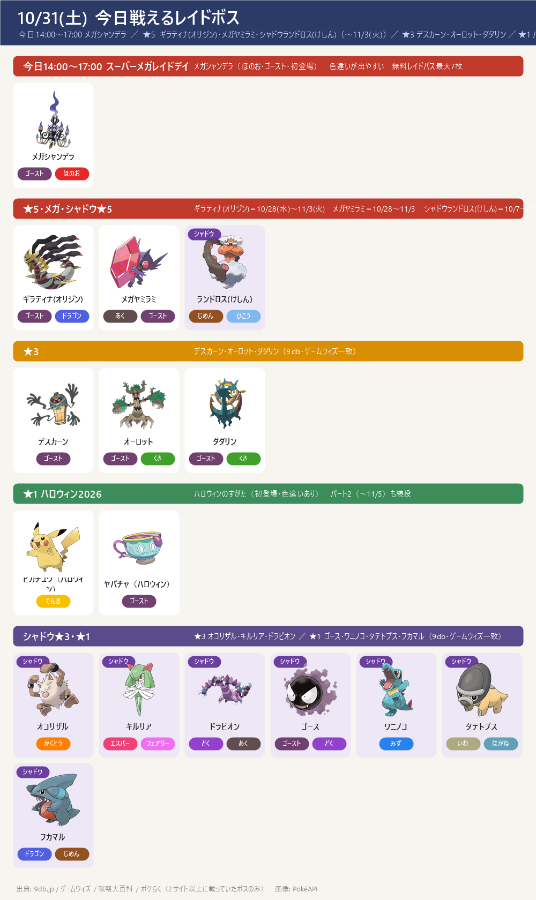
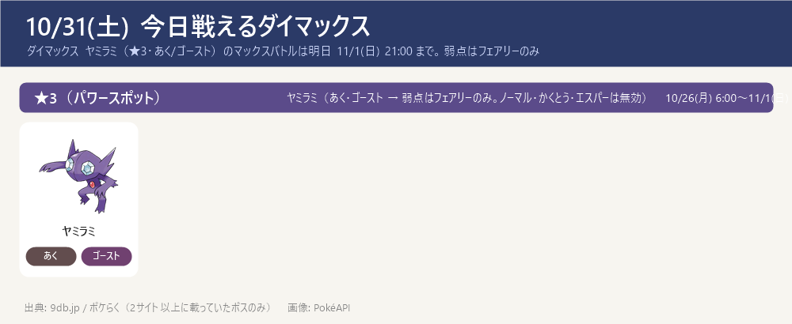
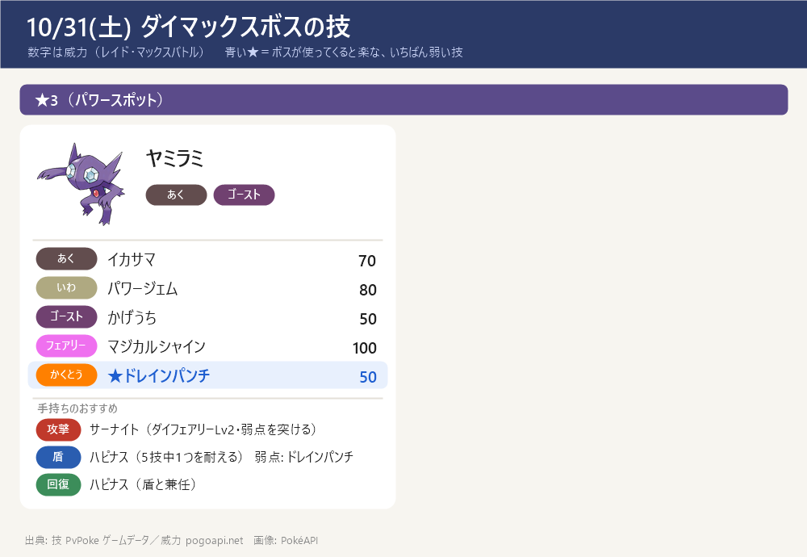

今日のポイント
- 【今日 14:00〜17:00】スーパーメガレイドデイ：メガシャンデラ（初登場）。無料レイドパスは当日最大7枚（前日分の持ち越しを含む）・色違いが出やすい。ほのお・ゴースト → 弱点はみず・じめん・いわ・ゴースト・あく（ノーマル・かくとうは無効）。くわしくはすぐ下の枠へ
- リモートレイドの上限が今だけ20回（10/31 9:00〜11/1(日) 12:00）。同じ期間にグローバルチャレンジ（レイド400万回）。達成すると 11/3〜11/16 にメガシャンデラが強くなるボーナス
- ★5 ギラティナ(オリジン)・メガヤミラミ・シャドウランドロス(けしん) は 11/3(火) まで。ギラティナの弱点はこおり・ゴースト・ドラゴン・あく・フェアリー、メガヤミラミはフェアリーのみ（終了日時はサイト差あり → ゲーム内で確認を）
- ダイマックス ヤミラミ（★3）は明日 11/1(日) 21:00 まで。弱点はフェアリーのみ。攻撃はサーナイト（ダイフェアリーLv2）、盾はハピナス。11/2(月)からはワンリキー
- ハロウィン2026 パート1 は明日 11/1(日) 10:00 まで → 続けてパート2（〜11/5(木) 20:00）。パート2は色違いボチが初登場（進化でハカドッグ）・メガヤミラミのスーパーマックスレベル解放
- 【締切近い】GOパス10月のポイント獲得は 11/3(火) 10:00 まで（報酬の受け取りは 11/5(木) 10:00 まで）。デラックスのキラチャーム使用期限は 11/8(日) 23:59
- 11/14(土) ダイマックス ディアルガに向けて強化を進める：カイリキー（カウンター）・ドリュウズ（マッドショット）・受けのメタグロス。マックス技の強化は 次はドリュウズ（ダイアース Lv1→Lv2）（サーナイトのダイフェアリーLv2は完了）。くわしくはダイマックス育成順ページ
東京の巣：東京の巣 10/22(木)〜11/5(木)（別ページ）
今日 14:00〜17:00 スーパーメガレイドデイ（メガシャンデラ 初登場）
- 10/31(土) 14:00〜17:00 の3時間限定。メガシャンデラ（ほのお・ゴースト）が初登場。色違いが出やすい（確率はサイトで未発表）
- 弱点（1.6倍）：みず・じめん・いわ・ゴースト・あく（ノーマル・かくとう技は無効）。おすすめはみず・いわ・じめんタイプのアタッカー
- レイドパス：無料は当日最大7枚（前日分の持ち越しを含む・3サイト一致）。有料チケット（700円）で+8枚・ふしぎなアメXLが出やすい・XP+5000・ほしのすな+5000。チケットありの上限はサイト差（9db 15枚／ポケらく 14枚）
- リモートレイド上限20回（10/31 9:00〜11/1 12:00）。グローバルチャレンジ：期間中にレイド400万回 → 達成で 11/3 5:00〜11/16 5:00 にメガシャンデラの「あやしいかぜ+」の威力アップ・スーパーマックスのCPブースト（GOバトルリーグには無し）
今日戦えるレイドボス
今日14:00〜17:00 メガシャンデラ ／ ★5 ギラティナ(オリジン)・メガヤミラミ・シャドウランドロス(けしん)（〜11/3(火)）／ ★3 デスカーン・オーロット・ダダリン ／ ★1 ハロウィン ピカチュウ・ヤバチャ ／ シャドウ★3・★1
- メガシャンデラは今日 14:00〜17:00 だけ（9db・攻略大百科・ゲームウィズ・ポケらく一致）。この時間にほかのレイドも出るかははっきり書いたサイトが無い → ゲーム内で確認を
- ★5 ギラティナ(オリジン)（ゴースト・ドラゴン）は 11/3(火) まで。弱点はこおり・ゴースト・ドラゴン・あく・フェアリー（すべて1.6倍・二重弱点なし）。色違いあり
- メガヤミラミ（あく・ゴースト）→ 弱点はフェアリーのみ。終了日は9db・攻略大百科・ゲームウィズで 11/3(火) だが、一部サイトは 11/8(日) とする差あり → ゲーム内で確認を（当ノートは複数サイト一致の 11/3 を採用）
- ★1のハロウィン ピカチュウ・ヤバチャはパート2の間も続けて出る（ゲームウィズ・9db）
- ★3 とシャドウ★3/★1 は今日は2サイトで一致（前日までは確定できなかった分）

今日戦えるダイマックス
ダイマックス ヤミラミ（★3・あく/ゴースト）のマックスバトルは明日 11/1(日) 21:00 まで。弱点はフェアリーのみ
- ダイマックス ヤミラミ（★3）のマックスバトルは 11/1(日) 21:00 まで（9db・ポケらく一致。開始時刻は 9db 5:00／ポケらく 6:00 と差あり）。参加に400MP。11/2(月) 6:00〜11/8(日) 21:00 はワンリキー（マックスマンデー 11/2 は 6:00〜21:00）
- ヤミラミは あく・ゴースト → 弱点はフェアリーのみ（ノーマル・かくとう・エスパー技は無効）。攻撃はサーナイト（ダイフェアリー Lv2）でフェアリーを突く。盾はハピナス（ノーマルなのでゴースト技が無効・HPで受ける）。※メタグロスはエスパーで あく・ゴースト技が2倍なので受けには使わない
- 今パワースポットに出ている★1〜★3のまとめ：今出ているダイマックスまとめを開く（★1〜★3の一覧・この後の予定）
- ダイマックス ヤミラミのくわしい攻略（受け役カード・パターン別の作戦・ソロ/人数の目安・育成価値）：攻略ページを開く
- 【各ボスのスペシャルアタック候補】（下のカード。数字はレイド・マックスバトルでの威力。★＝ボスが使ってくると楽な、いちばん弱い技（ボスと同じタイプの技は1.2倍で計算。こちらのポケモンとの相性は見ていない）。戦闘中に技名が出たら受け役を合わせる）


ハロウィン2026（パート1は明日10:00まで → パート2へ）
- パート1：〜11/1(日) 10:00（9db・ゲームウィズ一致。攻略大百科は 10/31(土) 20:00 と表記する差あり）
- パート2：11/1(日) 10:00〜11/5(木) 20:00（4サイト一致）。色違いボチが初登場（ハカドッグはボチを進化させて入手）・メガヤミラミのスーパーマックスレベル解放（技「ナイトヘッド+」）
- レイドの★1 ピカチュウ（ハット&ケープ）・ヤバチャ（リボン）はパート2も続投
- レイド★1（初登場）：ピカチュウ（ハット&ケープ姿）・ヤバチャ（リボン姿）。どちらも色違いあり
- ボーナス（GOパス連動）：ランク10到達で捕獲時のアメ2倍（デラックスは3倍）、ランク20到達で捕獲時のほしのすな2倍（デラックスは3倍）
サカキ対策（シャドウゼクロム）：攻略ページへ（別ページ）
締め切り・やること：まとめページへ（別ページ）
この先の予定（タップで開閉）
- 11/1(日) 10:00 ハロウィン2026 パート1 終了 → 同日 10:00〜11/5(木) 20:00 パート2（色違いボチ初登場・メガヤミラミのスーパーマックス解放）
- 11/1(日) 12:00 グローバルチャレンジ・リモートレイド上限20回 終了
- 11/1(日) 21:00 ダイマックス ヤミラミ 終了 ／ 11/2(月) 6:00〜11/8(日) 21:00 ダイマックス ワンリキー（マックスマンデー 11/2 は 6:00〜21:00）
- 11/3(火) 10:00 GOパス10月のポイント獲得終了 ／ 11/5(木) 10:00 報酬受け取り終了 ／ ★5 ギラティナ(オリジン)・メガヤミラミ・シャドウランドロス(けしん) 終了
- 11/4(水) ★5 ギラティナ(アナザー)・18:00〜19:00 レイドアワー（ギラティナ(アナザー)）・シャドウ★5 トルネロス(けしん) 開始（終了はサイト差：9db 12/1／攻略大百科 11/8）
- 11/5(木) 18:00〜19:00 スポットライトアワー：魔女の帽子をかぶったヒメグマ（進化でXP2倍）
- 11/8(日) 23:59 GOパス10月デラックスのキラチャーム使用期限
- 11/9(月) 10:00〜 ワイルドエリア Into the Wild（攻略大百科・ゲームウィズでは「ワイルドウィーク」）開始（〜11/13(金) 20:00）：王の姿のザシアン・ザマゼンタの ★5 レイド。18:00〜19:00 レイドアワーはザシアン。GOパス デラックスを最後までクリアで ぎんのおうかん（ザシアンの攻撃特訓用）。ポイント獲得は 11/15(日) 18:00 まで
- 11/10(火) 18:00〜19:00 レイドアワー：ザマゼンタ（王の姿にする ★5 レイド）
- 11/13(金) 20:00 ワイルドエリア Into the Wild 終了（ザマゼンタを王の姿にするのは今日まで）
- 11/14(土)・15(日) GOワイルドエリア：グローバル（ダイマックス ディアルガ・パルキア）→ ボス別の攻略ページ・育成順ページ作成済み（GitHub にも公開）
- 11/15(日) 18:00 GOパス（Into the Wild デラックス）のポイント獲得終了 → ぎんのおうかん確保。報酬の受け取りは 11/17(火) 23:59、ぎんのおうかんの使用は 11/22(日) 23:59 まで
サイトで違っていた点（タップで開閉）
- ★5 ギラティナ(オリジン)・メガヤミラミ・シャドウランドロス(けしん) の終了: 9db イベント一覧は 11/3(火) 21:00。攻略大百科はメガヤミラミの終了を 11/3 20:30 と 11/8 20:30 の2通りで書いている → ゲーム内で確認を（当ノートは 11/3 を採用）
- メガシャンデラの時間に他のレイドも出るか: どのサイトも明記なし（ポケらくは「他も出る」と予想しているだけ）→ 採用せず。ゲーム内で確認を
- 無料レイドパスの数え方: 最大7枚は3サイト一致。内訳はゲームウィズ・ポケらく「当日6枚＋持ち越し1枚」、9db「タイムチャレンジのボーナスで+5」と差あり。チケットありの上限は 9db 15枚／ポケらく 14枚
- 通常時のリモートレイド上限: ゲームウィズ 10回／ポケらく 5回と差あり（今日〜明日12:00は20回で一致）
- ワニノコ・タテトプス・フカマル: 9db だけ通常の★1にも載せている（シャドウ★1は2サイト一致）→ 通常★1としては採用せず
- ハロウィン パート1の終了: 9db・ゲームウィズ 11/1(日) 10:00／攻略大百科 10/31(土) 20:00 → 当ノートは 11/1 10:00 を採用
- パート2の野生（ヒトモシ・モクロー・ボチ・レアで魔女の帽子のゲンガー）とGOパスのボーナス: ゲームウィズのみ → 採用せず
- ダイマックスの★1/★2/★3の区分: 区分を書いているのは 9db だけ → ★3のヤミラミ以外は載せず（まとめは /topics/dmax-now/）
- ワイルドエリア仙台（11/6〜8）・GOパス11月（11/3〜）: 9db のみ → 採用せず
- ダイマックスボスの技候補はゲームデータ(PvPoke)から（おんがえし・やつあたりは除外）、威力は pogoapi.net
出典: 9db.jp/pokemongo（レイド日程 data/2308・開催イベント一覧 data/4351・マックスバトル data/20859・シャンデラ スーパーメガレイドデイ data/26153・ハロウィン2026 data/26443）／pokemon.gamepedia.jp/go（攻略大百科 今月のイベント archives/77843）／pokemongo.gamewith.jp（レイド show/60906・メガシャンデラ show/582648・ハロウィン2026 show/580744）／pokemongo-raku.com（マックスバトル post95707・メガシャンデラ post164299）／pvpoke.com ゲームデータ（技候補）
画像: PokéAPI ／ 2サイト以上で一致した情報だけを載せています